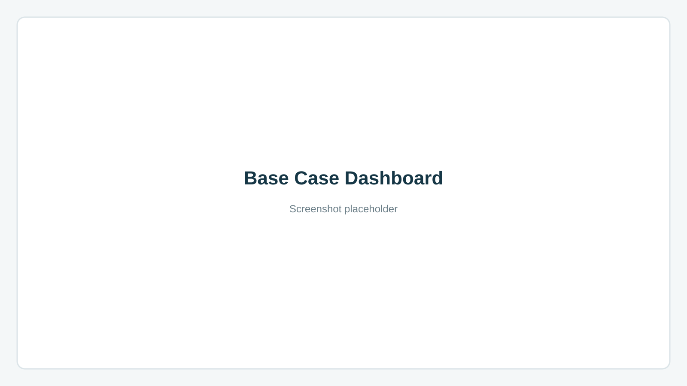
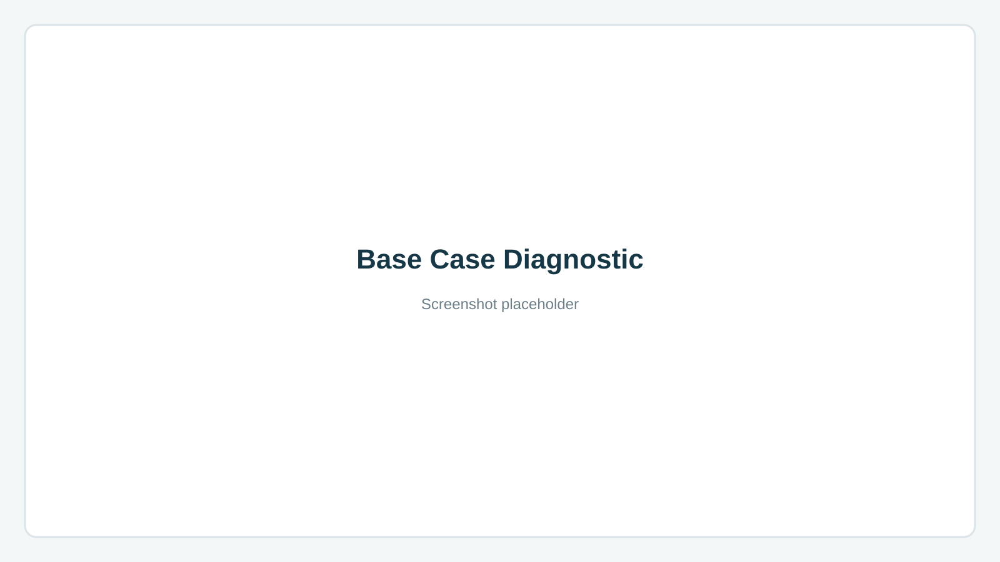

Base Case
Clearwater Ridge · North Development
A conventional black-oil model used as the primary reference case for Reservoir AI.
The model contains a complete reservoir, grid, fluid, rock-fluid, and well description. Reservoir AI converts this information into a structured engineering summary, characterizes reservoir heterogeneity, reconstructs the well inventory, and identifies conditions that deserve engineering review.
The Base Case is intentionally structurally valid. Its engineering findings illustrate an important distinction within the platform: a model can pass validation while still containing assumptions or relationships that warrant engineering attention.
Engineering Diagnostics
- High Vertical Permeability Ratio
- Relative Permeability Curve Direction Review
- Control After Shut-In
Validation
0 validation findings
Analysis
- 8 reservoir layers identified
- Moderate heterogeneity
- Dykstra-Parsons ≈ 0.42
- Layer 4 has the highest estimated pore-volume contribution

